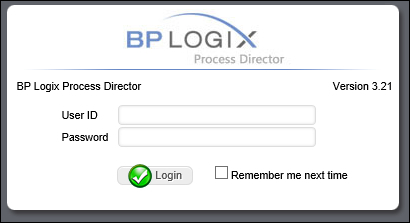
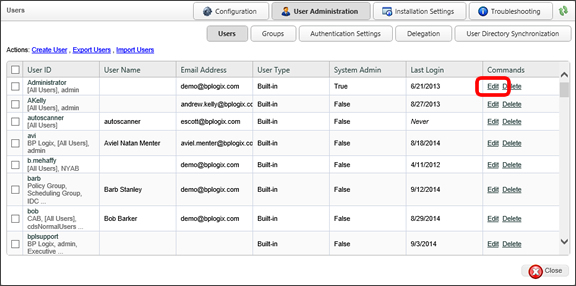
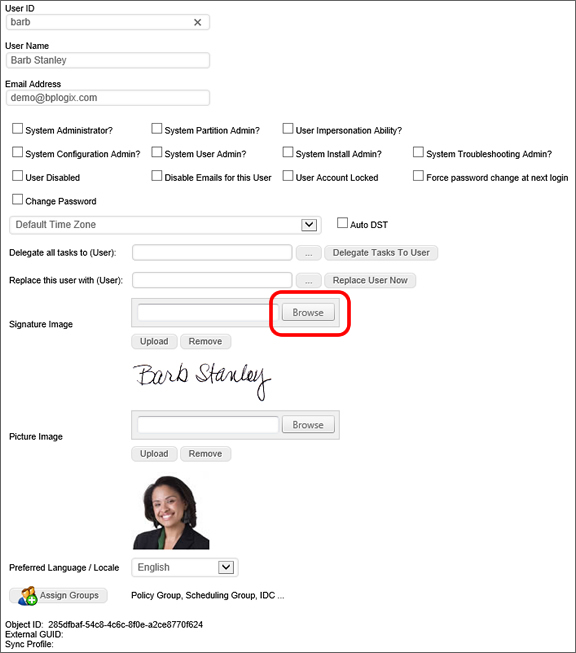

The following User ID’s are created on a new Process Director installation.
The User ID’s contain no passwords and have been given full permission to all objects on the server by default.
As part of your implementation, you will create new User ID’s and groups, as well as setting the appropriate permissions for your environment
When users want to login to Process Director, they must navigate to the login page located at http://server-name / where server-name is the host name where the server is installed. This will redirect the user to the login.aspx page in that directory. Depending on the authentication model used, the page below may be displayed, prompting for a User ID and password. If Windows Authentication is enabled, the user may be prompted with a Windows login dialog box to enter the user’s credentials.

Each user has a profile that contains settings and information about their User ID. The values include their email address, an optional Display Name and an option to change their password. Please note that only built-in users can edit settings on this page. Active Directory users must contact their administrator for changing profile details. The administrator can also control these options from the Process Director IT Admin section allowing the profile information to be configured for users. A user must have the appropriate authority to modify their own settings (by default all users can modify their profile) if the menu item is available.
An optional signature image file can be associated with a user ID causing it to be displayed next to their name in the routing slip when they complete their task. You can upload a signature for each user in the User Administration section of the system. If a file exists with the same name as the UserID or UID in the \BP Logix\Process Director\website\custom\signatures\ directory it will use that for the signature (it must have a “.gif” or “.jpg” file extension such as Susan.gif). It is recommended that a “.gif” file be used with a transparent background so the image can be displayed on web pages with different color backgrounds.
To attach a signature to a user, log in as an administrator and go to the IT Admin tab. From there, click on the User Administration link.
Click on the Edit link for the user to which you want to attach the signature.

Click Browse on the Signature Image field, select the signature’s image, and then click Upload.

Save your changes by clicking the OK button.
As an aside, you can follow the same process to add a user's image to the Picture Image field of the profile.
If a signature file is found it is automatically displayed anytime the Routing Slip is viewed. Below is an example of how the routing slip would appear with signature files uploaded to the system.
Process Director can be used by external users, which is to say, users from outside your organization. The most common use for external users is to include customers, suppliers, or other outside stakeholders as participants in a process.
In Process Director, authenticated users are those users who can be positively identified by Process Director, either through their internal Process Director user accounts, Active Directory, SAML, or Windows Single Sign-On. These users are considered to be internal users.
External users fall into to two broad categories. Anonymous users are those users who cannot be identified, and thus, having no identity, are only able to submit forms, and cannot be assigned tasks as a process participant. A Non-Authenticated user has an email address that can be assigned an identity. When an Anonymous user is identified with an email address, the user automatically becomes a Non-Authenticated user, and can be assigned tasks as a process participant.
 Access to Process Director for unauthenticated or anonymous users is enabled by an optionally licensed component.
Access to Process Director for unauthenticated or anonymous users is enabled by an optionally licensed component.A process participant, is any user, authenticated or non-authenticated, who is assigned a task in a process. In the case of non-authenticated users, tasks are assigned by sending an email to the user's email address. The email contains a special link to open a Process Director object, such as a Form, to enable the non-authenticated user to perform a process task.
It is important to remember that the Anonymous and Non-Authenticated user designations do not describe two separate classes of external user, but rather describe two different roles that may be assigned, at various times, to the same user. An external user can be an Anonymous user in the context of one operation (e.g., anonymously submitting a public-facing form), while simultaneously being a Non-Authenticated user in the context of a different operation (e.g., being assigned a process task via email address). Whether an external user is considered Anonymous or Non-Authenticated is based entirely upon whether or not the user has been identified by email address in the context of a specific operation. If so, the user is a Non-Authenticated user in the context of that operation, but is still an Anonymous user in all other contexts.
All external users who cannot be specifically identified by Process Director (including both Anonymous and Non-Authenticated users) are considered part of the Anonymous Users group when setting Process Director object permissions.
 Some Process Director licenses do not allow anonymous users. Additionally, for licenses that are granted on a per-user basis, any participants in a process—whether authenticated or anonymous—are counted as Process Director users for the purposes of licensing. Contact BP Logix if you are unsure whether your installation of Process Director is licensed to enable anonymous users.
Some Process Director licenses do not allow anonymous users. Additionally, for licenses that are granted on a per-user basis, any participants in a process—whether authenticated or anonymous—are counted as Process Director users for the purposes of licensing. Contact BP Logix if you are unsure whether your installation of Process Director is licensed to enable anonymous users.Anonymous users can be granted permissions to access objects just like any normal user by assigning permissions for an object to the Anonymous Users group. For example, you would assign Read permissions, and perhaps Modify permissions, to Anonymous Users on public-facing Forms and Knowledge Views that you would like external users to be able to access.
If an object is given Anonymous User permissions, then all other Process Director users will also have those permissions. If a non-authenticated user participates in a process, Process Director will automatically grant the required object permissions to the user to view or modify objects like Forms when the user needs to participate in or complete an assigned task in a process. Since non-authenticated users cannot log into Process Director, their every action and notification is based on their email address. Process Director sends email messages to non-authenticated users that give them the appropriate links to Process Director objects. As long as Process Director has a valid email addresses for the non-authenticated users, they can do the following:
When a Process Timeline Activity is assigned to a user with an invalid UID or user ID, Process Director will immediately stop the process, and place the Process Timeline Activity into an error state. This is also true for anonymous user assignments if the email address is not a valid format
Process Director cannot validate the email address itself, only that the email address is provided in the proper format.All user Timeline Activities have an option to enable non-authenticated users to complete a task based on the user's email address. This is a required option when using the Email Anonymous Task List system variable. In the vast majority of use cases, however, the email address will be taken from a Form field identified on the Participants tab.
In the case of user steps/activities that may be assigned to non-authenticated users, exercise care in using the “Automatically show user’s next task if it is in this process” setting. Process Director doesn’t distinguish among non-authenticated users when determining if the next task should be displayed, so if the current and subsequent tasks belong to different non-authenticated users, the subsequent task will still be displayed in the window of the current user. In the case of assignment to non-authenticated users, only use this option when you are certain that the same non-authenticated user will be assigned both tasks.